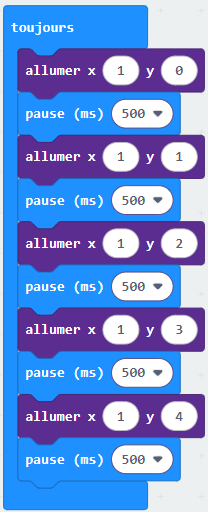

Catch the fruit¶
Introduction¶
Dans ce TP, nous allons programmer un petit jeu sur micro:bit. Le micro:bit est un ordinateur minimaliste qui prend la forme d’une carte sur laquelle on trouve, entre autres, un écran de diodes lumineuses et deux boutons.

Le but de l’activité est de programmer un jeu appelé catch the fruit.
L’idée est d’utiliser la matrice de 25 leds du micro:bit comme écran sur lequel un fruit représenté par 1 led va tomber du haut de l’écran et qu’il faudra rattraper dans un panier. Le panier sera déplaçable à l’aide des boutons A et B.

Mise en place¶
Etapes à programmer¶
Voici les différentes étapes que nous allons suivre afin de programmer le jeu:
Faire tomber un fruit du haut de l’écran
Déplacer le panier à l’aide des boutons
Détecter lorsqu’un fruit est attrapé (i.e. collision fruit-panier)
Gestion des échecs (i.e. fruit n’est pas attrapé)
Fin du jeu et affichage du score
Étape 1 - Faire tomber un fruit¶
Nous allons programmer un fruit qui tombe sur une des 5 colonne choisie aléatoirement.
Sur l’interface de programmation, vous voyez 2 blocs déjà présents:
au démarrage: les blocs posés dans ce bloc ne s’effectuent qu’une seule fois au démarrage du programme.toujours: les blocs posés dans ce bloc s’effectuent en boucle tant que le programme tourne.
Exercice 1¶
Chaque led possède des coordonnées x et y. Le led tout en haut à gauche se trouve aux coordonnées (0, 0) tandis que celui tout en bas à droite se trouve aux coordonnées (4, 4).
Nous allons commencer par faire tomber le fruit sur la colonne en x=1, c’est à dire la 2ème colonne en partant de la gauche.
Ajoutez 5 blocs allumer dans le bloc toujours pour allumer tous les blocs de la colonne en x=1.
Ajoutez aussi un bloc pause de 500ms après chaque allumage pour que le fruit ne tombe pas trop vite.

Voir la solution

Exercice 2¶
Ajoutez à présent 5 blocs éteindre pour allumer et éteindre successivement toutes les leds de la colonne du haut vers le bas.

Voir la solution

Exercice 3¶
En regardant de plus près les blocs utilisés, on remarque la répétition des 3 mêmes blocs : allumer, pause et éteindre. Chaque bloc est répété 5 fois.
Quand on a une répétition d’instructions, on veut que ce soit l’ordinateur qui fasse le travail ! On utilise alors des boucles.
L’idée est donc d’utiliser une boucle qui va répéter les instructions tout en augmentant y de 1 à chaque tour afin de faire tomber le fruit.
Utilisez le bloc pour index variant de 0 à 4 qui va créer une boucle dans laquelle index va prendre successivement les valeurs de 0 à 4, ce qui est exactement ce qu’il nous faut pour les valeurs de y.
index est ici ce que l’on appelle une variable. Sa valeur va varier de 0 à 4 à chaque tour. Il faut donc ensuite remplacer les valeurs de y par index.
Pas de changement visuel
Visuellement, le résultat doit être le même que précédemment, mais le code est plus court et plus lisible.
(Aide) Montrez moi les étapes à suivre
Voici les étapes à suivre:
Dans le bloc
toujours, gardez une seule répétition des blocsallumer,pauseetéteindre. Supprimez les autres blocs.Insérez le bloc
pour index variant de 0 à 4autour des blocs restants.Remplacez la valeur de
ypar la variableindex.
Voir la solution

Exercice 4¶
Le fruit tombe toujours dans la même colonne, on veut changer aléatoirement de colonne pour chaque fruit.
Pour choisir un nombre au hasard, on peut utiliser le bloc choisir au hasard de 0 à 10 du menu Maths.
Ce bloc permet de tirer un entier aléatoire entre 2 bornes, dans notre cas de 0 à 4 pour les 5 colonnes possibles.
Il faut donc tirer un nombre au hasard qui va être la colonne choisie et il faut pouvoir conserver ce choix tout au long de la chute du fruit.
Dès l’instant où on veut stocker de l’information pour pouvoir la réutiliser, la solution est d’utiliser une variable.
Utilisez le menu Variables pour créer une variable colonne et lui donner une valeur aléatoire avant la chute de chaque fruit.
(Aide) Montrez moi les étapes à suivre
Voici les étapes à suivre:
Dans la catégorie de blocs
Variables, choisissezCréer une variableet donnez lui le nomcolonne. Cette variable aura pour objectif de stocker le numéro aléatoire de la colonne dans laquelle va tomber le fruit.Ajoutez ensuite le bloc
définir colonne àpour donner une valeur aléatoire à la variablecolonne. Ce bloc doit être ajouté juste avant le début de la chute du fruit.Remplacez les coordonnées de
xpar la valeur de la variablecolonne.
Voir la solution

Fin de l’étape 1, on a un fruit qui tombe dans une colonne choisie aléatoirement !
Étape 2 - Déplacer le panier¶
Nous allons programmer le panier qui se déplace de droite à gauche à l’aide des boutons A et B.
Exercice 5¶
Pour commencer il faut choisir comment sera représenté le panier. Nous utiliserons 1 seule led sur la ligne tout en bas (coordonnée y à 4).
La position du panier va changer au cours du jeu, comment faire pour stocker de l’information qui varie ? (utiliser une variable)
Que doit-on représenter avec cette variable ? (la position en
xdu panier)
Définissez une variable panier pour la coordonnée horizontale du panier qui va varier et initiez-la à 0 au début du programme.
N’oubliez pas d’allumer les leds correspondantes, sinon on ne verra pas le panier !
(Aide) Montrez moi les étapes à suivre
Voici les étapes à suivre:
Créez une nouvelle variable nommée
panier.Dans le bloc
au démarrage, ajoutez un blocdéfinir panier à 0pour définir la position initiale du panier à 0 (tout à gauche).Ajoutez un bloc
allumerafin d’allumer la led à la position du panier.
Voir la solution
Exercice 6¶
Le panier est fixe, il faut le faire bouger.
Nous allons utiliser les boutons A et B pour les déplacements gauche et droite, respectivement.
Que signifie déplacer le panier à gauche en termes de positions ? (diminuer la valeur de sa coordonnée en
xde 1)Que doit-il se passer visuellement ? (éteindre les leds de la positon actuelle, faire le déplacement, allumer les leds de la nouvelle position)
Utilisez les blocs lorsque le bouton ... est pressé et ajoutez-y les blocs permettant de déplacer le panier. Le bloc modifier panier de 1 permet d’augmenter la valeur de la variable panier de 1. Changez le 1 en -1 pour diminuer sa valeur.

(Aide) Montrez moi les étapes à suivre
Voici les étapes à suivre:
Ajoutez un bloc
lorsque le bouton A est pressé.A l’intérieur, ajoutez un bloc
éteindrepour éteindre la led du panier.Modifiez la valeur de la variable
panierpour la diminuer de 1. Pour cela, ajoutez un blocmodifier panier de -1.Ajoutez un bloc
allumerpour allumer la led correspondant au nouvel emplacement du panier.Faites la même chose pour le bouton
Bqui doit permettre de déplacer le panier vers la droite.
Voir la solution

Exercice 7¶
Si on appuie de nombreuses fois sur le bouton A ou B, le panier disparait, il sort de l’écran !
On doit empêcher le panier d’aller plus loin que les bords de l’écran.
Pourquoi est-ce que le panier sort de l’écran ? (la variable
paniercontinue d’être modifiée pour finalement allumer des leds à des coordonnées qui n’existent pas)Sous quelle condition le panier peut-il se déplacer à gauche ? (si sa position en
xest > 0)Sous quelle condition le panier peut-il se déplacer à droite ? (si sa position en
xest < 4)
On introduit ici la structure de contrôle conditionnelle si ... alors ... et les tests de comparaison qui se trouvent dans le menu Logique.
Dans notre cas, si le panier ne va pas sortir de l'écran, alors il bouge.

(Aide) Montrez moi les étapes à suivre
Voici les étapes à suivre:
Ajoutez un bloc
si vrai alorsautour des instructions permettant de déplacer le panier vers la gauche (boutonA).Remplacez
vraipar le test de comparaison qui permet de contrôler que la position du panier est > 0. Les blocs de comparaison de trouve dans le menuLogique.Faites la même chose pour le déplacement vers la droite (en ajustant le test de comparaison).
Voir la solution
Fin de l’étape 2, on a un panier déplaçable à l’aide des boutons !
Étape 3 - Détecter lorsqu’un fruit est attrapé¶
Exercice 8¶
Il s’agit maintenant de détecter lorsque le fruit est attrapé par le panier, c’est-à-dire lorqu’il y a collision entre le fruit et le panier.
Visuellement il est facile de voir quand le fruit tombe dans le panier, mais comme le micro:bit ne voit pas, il faut trouver un moyen pour qu’il puisse vérifier s’il y a collision ou non.
A quelle condition y a-t-il collision entre le fruit et le panier ? (lorsque le fruit est en bas de l’écran et que sa colonne est la même que celle du panier)
Quelles sont les coordonnées en
xdu panier et du fruit ? (comme elles changent, elles sont dans des variables:colonnepour le fruit etpanierpour le panier)
On va donc tester si la variable colonne est égale à la variable panier et on va faire ce test juste après que le fruit soit tombé en bas de l’écran (i.e. à la fin de la boucle pour index variant de 0 à 4).
Utilisez un bloc si ... alors ... pour faire le test de collision et afficher une icône si le fruit est attrapé avec le bloc montrer l'icône. Ajoutez aussi un bloc effacer l'écran pour enlever l’icône.

(Aide) Montrez moi les étapes à suivre
Voici les étapes à suivre:
Ajoutez un bloc
si ... alors ...juste après la bouclepour index variant de 0 à 4.Dans le bloc
si, ajoutez un test de comparaison pour vérifier sicolonne == panier.Si la condition est respectée, affichez une icône avec le bloc
montrer l'icône.Si la condition est respectée, ajoutez un bloc
effacer l'écranpour effacer l’icône.
Voir la solution

Disparition du panier
Vous remarquerez que nous avons ajouté un bloc allumer x panier au début du bloc toujours. Sans ce bloc, le panier disparaît lorsqu’il entre en collision avec un fruit.
L’ajout de ce bloc permet de rallumer la led associée au panier avant la chute d’un fruit.
Exercice 9¶
On aimerait maintenant compter le nombre de fruits attrapés, c’est-à-dire le score du joueur !
Que doit-il se passer lorsqu’on attrape un fruit ? (on augmente le score de 1)
Comment faire pour tenir le score à jour ? (il faut utiliser une variable)
Vous devez donc créer une nouvelle variable pour le score que vous allez initialiser à 0 au démarrage.
Lorsqu’une collision a lieu, augmentez le score de 1. On s’occupera de l’affichage du score plus tard quand on fera le game over, il n’y a donc pas de nouveau visuel à cette étape.
(Aide) Montrez moi les étapes à suivre
Voici les étapes à suivre:
Créez une nouvelle variable nommée
scoreet définissez-la à 0au démarrage.Si la condition de collision est respectée, augmentez le
scorede 1 avec le blocmodifier score de 1.
Voir la solution
Fin de l’étape 3, le jeu détecte la collision entre le panier et le fruit et compte le score !
Étape 4 - Détecter lorsqu’un fruit est raté¶
Exercice 10¶
Un échec se produit lorsqu’un fruit finit sa chute en dehors du panier. Dans ce cas, le joueur perd une vie. On peut commencer par définir une variable vie initialisée à 3 au démarrage.
L’échec se produit lorsque le test de collision échoue donc quand la condition de collision n’est pas respectée.
Cliquez sur le petit + du bloc si ... de la collision pour faire apparaître un bloc sinon. Ce bloc est exécuté si la condition de collision n’est pas respectée, c’est-à-dire si le fruit est arrivé en bas de l’écran mais n’est pas dans le panier.
Dans le bloc sinon, ajoutez les blocs permettant de diminuer le nombre de vies de 1 et d’afficher une icône (par exemple un crâne) pour signaler que le fruit n’a pas été attrapé. N’oubliez pas d’effacer l'écran pour enlever l’icône.
Montrez moi les étapes à suivre
Voici les étapes à suivre:
Créez une nouvelle variable nommée
vieet définissez-la à 3au démarrage.Ajoutez un bloc
sinonau blocside la collision en cliquant sur le petit+.Dans le bloc
sinon, diminuez la variableviede 1 avec le blocmodifier vie de -1.Dans le bloc
sinon, affichez une icône (par exemple un crâne) avec le blocmontrer l'icône.Dans le bloc
sinon, ajoutez un bloceffacer l'écranpour effacer l’icône.
Voir la solution

Fin de l’étape 4, le jeu détecte quand le joueur rate un fruit et le joueur perd une vie !
Étape 5 - Fin du jeu¶
Exercice 11¶
Le jeu est maintenant fonctionnel, on marque des points lorsqu’un fruit est attrapé et on perd une vie quand on le rate ! Cependant, le jeu ne s’arrête pas même si on a perdu plus de vies qu’on en avait au départ.
Nous allons donc faire s’arrêter le jeu selon une condition à déterminer, puis nous afficherons le score du joueur.
Quand est-ce que le jeu doit s’arrêter ? (lorsqu’on a plus de vies)
Quelle est la condition qui permet de continuer à jouer ? (si le nombre de vies > 0)
Quelle partie du jeu suffit-il d’empêcher pour que le jeu s’arrête ? (la chute des fruits)
Que doit-on faire lorsque le jeu est fini ? (afficher le score)
L’arrêt du jeu s’implémente simplement en conditionnant la chute des fruits au fait d’avoir au moins une vie, l’alternative (sinon) étant la fin de partie avec affichage du score.

Montrez moi les étapes à suivre
Voici les étapes à suivre:
Ajoutez un bloc
si ... alors ...autour de tout votre code (tout le contenu du bloctoujours).Remplacez
vraipar le test de comparaison qui permet de contrôler que le nombre de vies est > 0.Cliquez sur le petit
+du blocsi ...pour faire apparaître un blocsinon.Dans le bloc
sinon, affichez le score avec le blocafficher le nombre(onglet BASE).
Voir la solution
Ceci termine l’implémentation de base de ce jeu sur micro:bit.
Voir le code final

Une version du jeu complet est disponible ici, il suffit de télélcharger et déposer le fichier dans la fenêtre Makecode ouverte dans votre navigateur (mais attention, il remplacera votre code).
Pour aller plus loin¶
Pour rendre le jeu plus intéressant, voici une liste de suggestions:
Augmenter la vitesse de chute des fruits après un certain nombre de points
Faire tomber de manière aléatoire des fruits pourris / bombes qui font perdre une vie si atttrapés (on peut jouer avec la luminosité des leds pour faire la distinction)
Faire déplacer le panier en inclinant la carte micro:bit au lieu des boutons A et B
Faire tomber plusieurs fruits en même temps
Faire tomber certains fruits légèrement en diagonal
Elargir le panier à 2 leds
Etc…
Nous n’avons fait que gratouiller la surface de ce qu’il est possible de programmer sur un micro:bit. Rendez-vous ici pour explorer les différents projets.